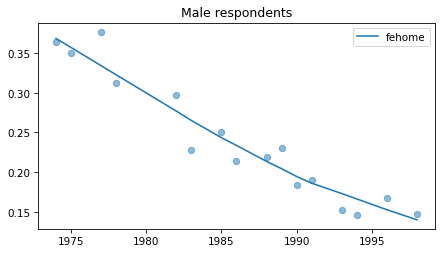
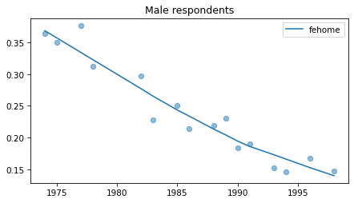

Data Inventory#
Allen Downey
import pandas as pd
import numpy as np
import matplotlib.pyplot as plt
Data#
GSS released 2022_r3a in April 2024.
Download the Stata data from https://gss.norc.org/get-the-data/stata
Move to nb directory and unzip
!ls GSS_stata/
'2022 Release Variables.pdf' gss7222_r3a.dta 'Release Notes 7222.pdf'
'GSS 2022 Codebook.pdf' gss7222_r3.dta
"GSS 2022 - What's New R3.pdf" ReadMe.txt
filename = "GSS_stata/gss7222_r3a.dta"
The following subset includes all of the fe variables that were asked in more than a few years, the standard set of demographic variables, and a few related topics we might explore at some point.
columns = sorted(
[
'abany',
'abdefect',
'abhlth',
'abnomore',
'abpoor',
'abrape',
'absingle',
'acqntsex',
'age',
'attend',
'ballot',
'cohort',
'degree',
'discaffm',
'discaffw',
'divorce',
'educ',
'fair',
'fechld',
'fefam',
'fehelp',
'fehire',
'fehome',
'fejobaff',
'fepol',
'fepres',
'fepresch',
'fework',
'frndsex',
'fund',
'hapmar',
'happy',
'health',
'helpful',
'id',
'life',
'matesex',
'othersex',
'paidsex',
'partyid',
'pikupsex',
'polviews',
'race',
'realinc',
'realrinc',
'region',
'relig',
'reliten',
'rincome',
'sex',
'sexbirth',
'sexfreq',
'sexnow',
'sexornt',
'sexsex',
'sexsex5',
'spanking',
'srcbelt',
'trust',
'wtssall',
'wtssps',
'year'
]
)
gss = pd.read_stata(filename, columns=columns, convert_categoricals=False)
# weights are different in 2021 and 2022 so mixing them in might seem like a bad idea,
# but we only use them for resampling within one year of the survey,
# so I think it's ok
gss["wtssall"] = gss["wtssall"].fillna(gss["wtssps"])
gss["wtssall"].describe()
count 72390.000000
mean 1.000014
std 0.550871
min 0.073972
25% 0.549300
50% 0.961700
75% 1.098500
max 14.272462
Name: wtssall, dtype: float64
del gss["wtssps"]
print(gss.shape)
gss.head()
(72390, 61)
| abany | abdefect | abhlth | abnomore | abpoor | abrape | absingle | acqntsex | age | attend | ... | sexfreq | sexnow | sexornt | sexsex | sexsex5 | spanking | srcbelt | trust | wtssall | year | |
|---|---|---|---|---|---|---|---|---|---|---|---|---|---|---|---|---|---|---|---|---|---|
| 0 | NaN | 1.0 | 1.0 | 1.0 | 1.0 | 1.0 | 1.0 | NaN | 23.0 | 2.0 | ... | NaN | NaN | NaN | NaN | NaN | NaN | 3.0 | 3.0 | 0.4446 | 1972 |
| 1 | NaN | 1.0 | 1.0 | 2.0 | 2.0 | 1.0 | 1.0 | NaN | 70.0 | 7.0 | ... | NaN | NaN | NaN | NaN | NaN | NaN | 3.0 | 1.0 | 0.8893 | 1972 |
| 2 | NaN | 1.0 | 1.0 | 1.0 | 1.0 | 1.0 | 1.0 | NaN | 48.0 | 4.0 | ... | NaN | NaN | NaN | NaN | NaN | NaN | 3.0 | 2.0 | 0.8893 | 1972 |
| 3 | NaN | 2.0 | 1.0 | 2.0 | 1.0 | 1.0 | 1.0 | NaN | 27.0 | 0.0 | ... | NaN | NaN | NaN | NaN | NaN | NaN | 3.0 | 2.0 | 0.8893 | 1972 |
| 4 | NaN | 1.0 | 1.0 | 1.0 | 1.0 | 1.0 | 1.0 | NaN | 61.0 | 0.0 | ... | NaN | NaN | NaN | NaN | NaN | NaN | 3.0 | 2.0 | 0.8893 | 1972 |
5 rows × 61 columns
Inventory#
Here are the 10 fe variables and the text of the questions.
fechld
A. A working mother can establish just as warm and secure a relationship with her children as a mother who does not work.
fefam
D. It is much better for everyone involved if the man is the achiever outside the home and the woman takes care of the home and family.
fehelp
B. It is more important for a wife to help her husband’s career than to have one herself.
fehire
Because of past discrimination, employers should make special efforts to hire and promote qualified women.
fehome
Women should take care of running their homes and leave running the country up to men.
fejobaff
Some people say that because of past discrimination, women should be given preference in hiring and promotion. Others say that such preference in hiring and promotion of women is wrong because it discriminates against men. What about your opinion - are you for or against preferential hiring and promotion of women? IF FOR:Do you favor preference in hiring and promotion strongly or not strongly? IF AGAINST:Do you oppose preference in hiring and promotion strongly or not strongly?
fepol
A. Tell me if you agree or disagree with this statement: Most men are better suited emotionally for politics than are most women.
fepres
If your party nominated a woman for President, would you vote for her if she were qualified for the job?
fepresch
C. A preschool child is likely to suffer if his or her mother works.
fework
Do you approve or disapprove of a married woman earning money in business or industry if she has a husband capable of supporting her?
fe_columns = [x for x in gss.columns if x.startswith('fe')]
fe_columns
['fechld',
'fefam',
'fehelp',
'fehire',
'fehome',
'fejobaff',
'fepol',
'fepres',
'fepresch',
'fework']
len(fe_columns)
10
#
from utils import decorate
grouped = gss.groupby('year')
intervals = pd.DataFrame(columns=['first', 'last', '# years'], dtype=int)
for column in fe_columns:
plt.figure()
counts = grouped[column].count()
counts.plot.bar()
nonzero = counts.replace(0, np.nan).dropna()
n_years = len(nonzero)
first, last = nonzero.index.min(), nonzero.index.max()
intervals.loc[column] = first, last, n_years
decorate()
intervals
| first | last | # years | |
|---|---|---|---|
| fechld | 1977 | 2022 | 23 |
| fefam | 1977 | 2022 | 23 |
| fehelp | 1977 | 1998 | 11 |
| fehire | 1996 | 2022 | 13 |
| fehome | 1974 | 1998 | 16 |
| fejobaff | 1996 | 2022 | 13 |
| fepol | 1974 | 2022 | 27 |
| fepres | 1972 | 2010 | 19 |
| fepresch | 1977 | 2022 | 23 |
| fework | 1972 | 1998 | 17 |
Responses#
Most are on a four point scale:
1 STRONGLY AGREE
2 AGREE
3 DISAGREE
4 STRONGLY DISAGREE
fehire is on a five-point scale
1 STRONGLY AGREE
2 AGREE
3 NEITHER AGREE NOR DISAGREE
4 DISAGREE
5 STRONGLY DISAGREE
Some are on a two-point scale.
from utils import values
for col in fe_columns:
print(values(gss[col]))
fechld
1.0 9240
2.0 15202
3.0 8666
4.0 2342
NaN 36940
Name: count, dtype: int64
fefam
1.0 2810
2.0 9839
3.0 15198
4.0 7284
NaN 37259
Name: count, dtype: int64
fehelp
1.0 769
2.0 3769
3.0 7732
4.0 3041
NaN 57079
Name: count, dtype: int64
fehire
1.0 2817
2.0 5945
3.0 2048
4.0 2389
5.0 580
NaN 58611
Name: count, dtype: int64
fehome
1.0 5424
2.0 17114
NaN 49852
Name: count, dtype: int64
fejobaff
1.0 2299
2.0 1311
3.0 2906
4.0 3936
NaN 61938
Name: count, dtype: int64
fepol
1.0 9982
2.0 25715
NaN 36693
Name: count, dtype: int64
fepres
1.0 23257
2.0 3531
5.0 4
NaN 45598
Name: count, dtype: int64
fepresch
1.0 2817
2.0 11254
3.0 16303
4.0 4731
NaN 37285
Name: count, dtype: int64
fework
1.0 18753
2.0 5648
NaN 47989
Name: count, dtype: int64
fepol and fehome: 1 agree, 2 disagree
fework: 1 approve, 2 disapprove
fepres: 1 yes 2 no 5 would not vote – let’s replace 5 with no
gss['fepres'] = gss['fepres'].replace(5, 2)
values(gss['fepres'])
fepres
1.0 23257
2.0 3535
NaN 45598
Name: count, dtype: int64
For each variable, I’ll select “agree” and “strongly agree”, except for fework, where I’ve selected “approve”.
agree_responses = {
'fechld': [1, 2],
'fefam': [1, 2],
'fehelp': [1, 2],
'fehire': [1, 2],
'fehome': [1],
'fejobaff': [1, 2],
'fepol': [1],
'fepres': [1],
'fepresch': [1, 2],
'fework': [1],
}
from utils import plot_series_lowess
def plot_series(data, column, color, title):
xtab = pd.crosstab(data['year'], data[column], normalize='index')
series = xtab[agree_responses[column]].sum(axis=1)
plot_series_lowess(series, color=color, label=column)
decorate(title=title)
All respondents#
Note that these results have not yet been corrected for stratified sampling, so think of this as an inventory of the data, not inferences about the population.
Last two points of
fehirehave gone wonky – I’ve seen things like this in the 2021 and 2022 data. Not sure what the issue is.
for column in fe_columns:
plt.figure()
plot_series(gss, column, 'C2', 'All respondents')
Female respondents#
female = gss.query('sex == 2')
for column in fe_columns:
plt.figure()
plot_series(female, column, 'C1', title='Female respondents')
Young females#
Noisier series due to smaller sample sizes.
young_female = female.query('age < 30')
for column in fe_columns:
plt.figure()
plot_series(young_female, column, 'C4', title='Female respondents age < 30')

Male respondents#
No indications of recent reversals, except fehire, which is wonky for everybody.
Strange pattern in fepol.
male = gss.query('sex == 1')
for column in fe_columns:
plt.figure()
plot_series(male, column, 'C0', title='Male respondents')
 

Young males#
Noisier series due to smaller sample sizes.
No indications of reversals that are anything other than random, with the possible exception of fework – but I doubt it’s real, and even if it was, it happened in 1990.
young_male = male.query('age < 30')
for column in fe_columns:
plt.figure()
plot_series(young_male, column, 'C3', title='Male respondents age < 30')
Write extracts#
!rm -f gss_eds_2022.hdf
gss.to_hdf("gss_feminism_2022.hdf", key="gss", complevel=6)
!ls -lh gss_feminism_2022.hdf
-rw-rw-r-- 1 downey downey 3.2M Jun 3 20:35 gss_feminism_2022.hdf
Resample
from utils import resample_by_year
sample = resample_by_year(gss, "wtssall")
!rm gss_feminism_resampled.hdf
sample.to_hdf("gss_feminism_resampled.hdf", key="gss", complevel=6)
!ls -lh gss_feminism_resampled.hdf
-rw-rw-r-- 1 downey downey 3.3M Jun 3 20:35 gss_feminism_resampled.hdf